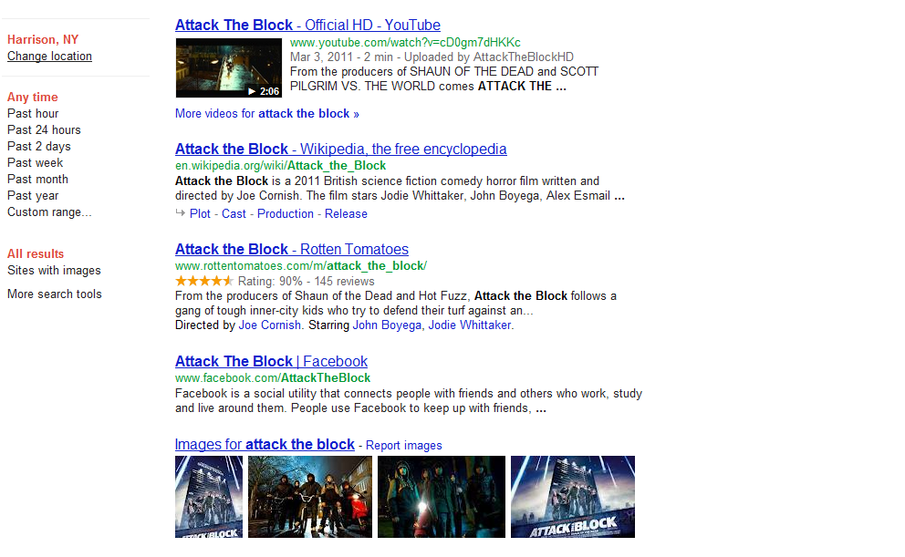
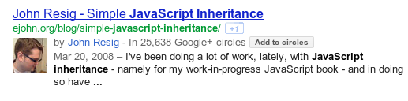

Working in
Web Development and New Media
Applying your IT Degree and Building a Personal Brand

Aram Zucker-Scharff.
Search Engine Optimization is
But testing is important, we need information!
Find the keys.
site:
inurl: / allinurl:
intitle: / allintitle:
inanchor: / allinanchor:
intext:
*
related:
info:
cache:
~keyword
[site:connect2mason.com intitle:football] + [site:connect2mason.com inurl:football]
See what others are doing.
3 ways to
attack the search page!
Google: Sort of a speed freak.
Use Google's page speed testing tool.
Every day, more than 99 human years are wasted because of uncompressed content. [...] Uncompressed content hurts all users.
Some things it may tell you to do:
Browser side caching.
No more than 1 year into the future
- A whole page
<META HTTP-EQUIV="EXPIRES"
CONTENT="Mon, 22 Jul 2002 11:12:01 GMT">
- Caching elements in .htaccess
<FilesMatch "(?i)^.*\.(ico|flv|jpg|jpeg|png|gif|js|css)$">
ExpiresActive On
ExpiresDefault A2592000
</FilesMatch>
A = access time. 2592000 is the number of seconds in 30 days.
Turn images into CSS sprites
Every time you load an image, it is another communication between your computer and the server.
#navlist{position:relative;}
#navlist li{margin:0;padding:0;list-style:none;position:absolute;top:0;}
#navlist li, #navlist a{height:44px;display:block;}
#home{left:0px;width:46px;}
#home{background:url('img_navsprites.gif') 0 0;}
#prev{left:63px;width:43px;}
#prev{background:url('img_navsprites.gif') -47px 0;}
#next{left:129px;width:43px;}
#next{background:url('img_navsprites.gif') -91px 0;}
Compressing your site in .htaccess
Usable on Apache servers
# compress text, html, javascript, css, xml:
AddOutputFilterByType DEFLATE text/plain
AddOutputFilterByType DEFLATE text/html
AddOutputFilterByType DEFLATE text/xml
AddOutputFilterByType DEFLATE text/css
AddOutputFilterByType DEFLATE application/xml
AddOutputFilterByType DEFLATE application/xhtml+xml
AddOutputFilterByType DEFLATE application/rss+xml
AddOutputFilterByType DEFLATE application/javascript
AddOutputFilterByType DEFLATE application/x-javascript
# Or, compress certain file types by extension:
<files *.html>
SetOutputFilter DEFLATE
</files>
Minify!
Minification is the process by which JavaScript and CSS can be shrunk to smaller file sizes by removing unnecessary characters.
Minification tools:
Don't be
Serve the image sizes your users need, not the ones they deserve.
Serve thumbnails. Link to high-def.
Internal Linking and Navigation
- Tells crawlers what pages exist.
- Trickles down PageRank.
- Order a hierarchy of importance.
- Position matters!
Use your links' power with care
Make a choice: what pages matter?
- Placement top to bottom.
- Placement left to right.
- Evergreen vs Transient.
- Make it better for users and SEO!
An internal PageRank Example
- Home Page: PR7
- About the paper: PR6
- Awards: PR3
- Editors: PR6
- News: PR6
- Style: PR6
Context is important!
Google looks at the text surrounding HTML tags, videos and photos to determine what they are about.
Use captions!
A hierarchy of heading tags.
XML Sitemaps
Tools to generate XML sitemaps.
A Sitemap plugin for WordPress
But what are they building?
A sample sitemap
<?xml version="1.0" encoding="UTF-8"?>
<urlset xmlns="http://www.sitemaps.org/schemas/sitemap/0.9"
xmlns:image="http://www.sitemaps.org/schemas/sitemap-image/1.1"
xmlns:video="http://www.sitemaps.org/schemas/sitemap-video/1.1">
<url>
<loc>http://www.example.com/foo.html</loc>
<image:image>
<image:loc>http://example.com/image.jpg</image:loc>
</image:image>
<video:video>
<video:content_loc>http://www.example.com/video123.flv</video:content_loc>
<video:player_loc allow_embed="yes" autoplay="ap=1">http://www.example.com/videoplayer.swf?video=123</video:player_loc>
<video:thumbnail_loc>http://www.example.com/thumbs/123.jpg</video:thumbnail_loc>
<video:title>Grilling steaks for summer</video:title>
<video:description>Get perfectly done steaks every time</video:description>
</video:video>
</url>
</urlset>
Relevant content types.
General Content
xmlns="http://url"
Image
xmlns:image="http://url"
Video
xmlns:video="http://url"
News
xmlns:news="http://url"
Tags
- urlset - The container for information about all pages in the site.
- url - Contains information about a single URL.
- loc - The unique URL or landing page of the content.
- lastmod - The last time modified.
- changefreq - How often you anticipate changes to the page.
- priority - Internal priority for the URL within the site.
- 1.0 is highest. .1 is lowest.
Canonicalization
WWW vs no WWW.
Multiple URLs for the same content.
Google penalizes duplicated content.
Fixing Canonicalization
Sitemaps are one solution!
In the HEAD:
<link rel="canonical" href="http://www.example.com/news/football-team-wins-again.html">
Check if you have a canonicalization problem with Webmaster Tools.
Keywords
are very important.
Let's escape the HEAD tag and find keywords everywhere!
Don't go to the dark side.
Keyword stuffing will blow up in your face.
Research your keywords
You already have your initial niche.
Your University
But there's more!
- Sports teams
- Regular events
- Particular areas
- ...?
Test and find your keywords
Some free tools:
The best keyword testing tool.
Google AdWords
Let's take a look.
Links
Internal and external links bring value.
But be careful.
- Buying links
- Selling Links
- Automated link building
Use the "title"
<a href="http://example.com" target="_blank" title="Example">
Concentrate your link's power with one keyword theme.
Verticals and Keyword Pages
A lot of articles covering one topic?
Don't diffuse and confuse.
Link them together!
URL Structure
What's on top matters.
http://www.hacktext.com/2011/09/are-timestamps-part-of-your-site-they-should-be-1283/
Keywords in the URL
Unique ID if it's news.
Google META tags.
- original-source
- syndication-source
- standout
- author
Google standout META tag
<link rel='standout'
href='http://www.example.com
/scoop_article_2.html' />
Use (infrequently) to link to your (and other's) best stories.
No more than once a day
Google author META tag
To use the author meta tag, you must have the site in the "Contributed to" section of your Google+ profile.
Option 1: Make sure your name and email is on the page.
Option 2: Use the G+ Button.
author META with multiple contributors
Link to author pages in your site using rel=author.
Link from the author page to your Google Profile using rel=me
The link to your G+ profile is the one that must be reciprocated.
There's so much more to SEO
Read. Read. Read.
More sources to start you off:
Questions?
Find this presentation at http://aramzs.me/seo201
Aram Zucker-Scharff
Assistant Director for Marketing and Communications
George Mason University Student Media.
- azuckers@gmu.edu
- @Chronotope